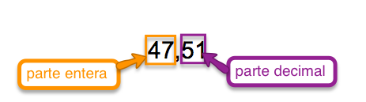
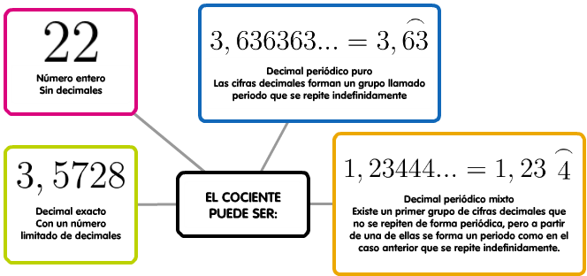

Como ya hemos visto, los números enteros no son suficientes para expresar todas las situaciones de la vida cotidiana. Precisamente utilizamos las fracciones para expresar partes de un total y las expresamos como una división sin realizar; pero... ¿qué ocurre si efectuamos dicha división entre el numerador y el denominador y obtenemos un resultado con resto distinto de 0? ¿Podemos seguir repartiendo el resto sobrante?
La respuesta es afirmativa, y obtendríamos un número decimal.
Los números decimales forman parte de nuestra rutina, puede que incluso más que las fracciones. Usamos los números decimales cuando pagamos con monedas de céntimo: esto cuesta 3,45 €, cuando expresamos nuestra altura: mido 1,62 metros...
Números decimales.
Los números decimales están formados por una parte entera y otra parte decimal, separadas por una coma. Para expresar la parte decimal recurrimos a las unidades decimales (décimas, centésimas, milésimas...):

Donde el 5 son las décimas y 1 las centésimas.
Paso de fracción a decimal.
Para pasar de fracción a decimal ya hemos visto que hay que efectuar la división entre numerador y denominador. Aunque lo normal es que recurras a la calculadora para dicha operación, si quieres refrescar la memoria te dejamos el siguiente vídeo
Una vez realizada la operación el cociente puede ser:

Practica
En el siguiente ejercicio puedes practicar estos conceptos. Para hacer la actividad más ágil, te recomendamos que uses la calculadora para realizar las divisiones:
Operaciones con números decimales.
Haz clic en las pestañas para ver cómo se realiza cada operación con números decimales paso a paso:
Ejercicios
🔮 ¡Practica las operaciones con decimales! Haz clic en cada tarjeta para darle la vuelta y recordar las reglas explicadas paso a paso:
Ejercicio
Marcos ha sacado dinero de su cuenta corriente utilizando la tarjeta de crédito en un cajero automático. Ha sacado 120 €, pero ha perdido el comprobante de la operación y no puede saber el saldo que tiene. Mirando el comprobante de la última vez que usó la tarjeta observa que tenía 904,21 €. Después le han ingresado la nómina del mes, de 1339,56 € y ha pagado de esa cuenta los recibos de la luz cuyo importe ha sido de 53,21 €, del alquiler del piso, por un valor de 320,80 € y la letra del coche, de 207,95 €.
1. ¿Qué saldo indicaba el comprobante que ha perdido Marcos?.
2. Al llegar a su casa Marcos encuentra el aviso de cobro de dos domiciliaciones: agua, 32,67 €, y seguro del coche, 437,45 €. Con el dinero que le quede después de esos pagos quiere hacer 3 partes iguales, una para comprar un ordenador que cuesta 380 €, otra para libros y música y la tercera para sus gastos. ¿Podrá comprarse el ordenador?
Curiosidad
Aunque todas las fracciones se pueden expresar en forma decimal, no todos los números decimales se pueden expresar en forma de fracción. Estos números se llaman irracionales, y los estudiaremos más adelante.